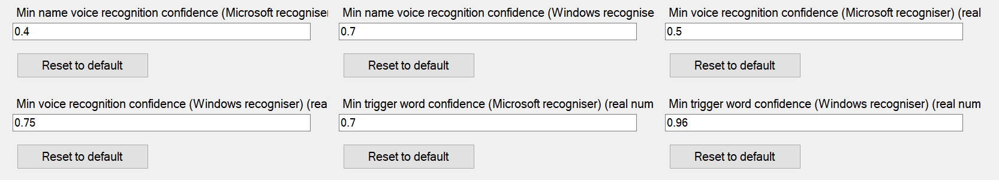
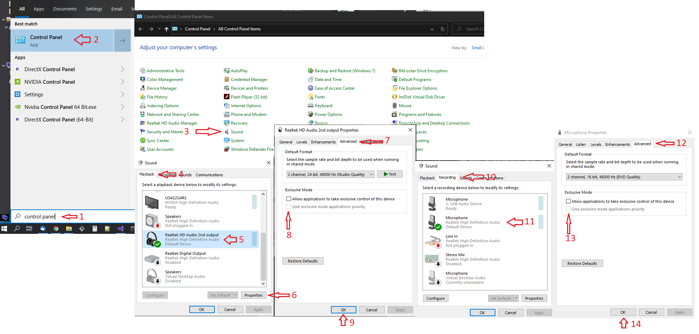

- The default option is referred to as the "Windows speech recognition engine" and uses the speech recognition system built in to Windows. This requires a better quality voice input signal than the default system but can be trained to recognise a user's individual voice. It does not require the installation of any additional components.
- The other option is referred to as the "Microsoft speech recognition engine" which is optimised for noisy environments and poor quality sound input. It requires no training and works with a wide range of microphone types and accents, but it requires a separate runtime installation and a language pack.
If you want to use the default Windows speech recognition engine simply ensure that the 'Prefer Windows speech recogniser' option is checked on the Properties screen. You will get better results if you work through the speech recognition training process in Windows.
Windows Speech Recognition on non-English Windows Installs
If your Windows install isn't English, you may need to add the English language speech recognition files to your Windows install.In Settings -> "Time and Language" click Language and add a language package - English (US) works well. Exit the Settings app and restart it, go back to Time and Language settings, then Speech. The language you just added should appear in the Speech Language drop down box, showing that it's available as a speech recognition language.
That should be sufficient - start Crew Chief and see if it works. You might need to select English (US) as you speech language in the Time and Language settings screen.
There's also a checkbox in the Speech settings for "Recognise non-native accents for this language". This may improve accuracy for some users.
Note that you don't have to change your display language to English
If you want to use the Microsoft voice recognition system, you'll need to install the Microsoft Speech Recognition runtime SpeechPlatformRuntime.msi. From this page click 'Download' and select the right version - for most users this will be x64_SpeechPlatformRuntime\SpeechPlatformRuntime.msi. Alternative downloads containing this installer (and installers for the UK and US language packs) are here (64bit) and here (32bit)
Once you've installed this, you'll also need to install an English language pack. The official download location for these is here
Again, from this page click 'Download' and select the right version - for most users this will be MSSpeech_SR_en-US_TELE.msi (US users) or MSSpeech_SR_en-GB_TELE.msi (UK users).
If this isn't available, these language packs are also in the alternative download package linked above.
Note that Crew Chief will fall back to using the Microsoft speech recognition engine if it can't find a working installation of the Windows speech recognition engine.
Crew Chief will use the "Default" recording device for voice recognition - this can be selected in the "Recording devices" section of the Window Sounds control panel.
(There is also the further choice of using nAudio for input but that is not recommended, but it does allow you can choose the recording device.)
Voice recognition can be configured to be always-on (it listens continuously and responds when it recognises a command) or in response to a button press. To assign a button to a activate voice recognition see Getting Started: Control Buttons. By default you have to hold this button down while you talk - this can be changed by selecting a different 'Voice recognition mode'.
Confidence Levels
The voice recognition system reports a "Confidence Level", indicating
how confident is is that it understood what you said.
Crew Chief uses that to be sure that speech is intended as a
and that Crew Chief interprets the command correctly. Crew Chief uses
confidence thresholds to decide whether to reject a voice command which
is recognised with too low a confidence value. The Microsoft and
Windows speech recognition engines report different confidence values and
Crew Chief also uses different threshold values for different situations
(recognising the trigger word "Chief", recognising commands,
recognising names) so there are 6 levels that can be adjusted if
needed. Crew Chief shows the confidence level in the
console window along with the relevant threshold property name and
value when it recognises speech - e.g. Microsoft
recogniser heard keyword "Chief", waiting for command,
confidence 0.986.
By default, Crew Chief will modify the Confidence Level thresholds
automatically, while running tuning them to better match the range of values reported
by the speech recogniser (starting from the initial values set in the Properties screen).
A screen dump of the levels:

Testing voice recognition
Having set it all up press the Start Application button in Crew Chief, then press your voice recognition button and ask "Can you hear me?". If Crew Chief can understand you it'll respond with "Yes, I can hear you".Make sure you test this while the game is running as some games claim exclusive control, so if no app is running that is claiming control it will always work.
If it doesn't work: right click on the speaker on the taskbar, select Open Sound Settings then Sound Control Panel. In the Playback tab, select your playback device, then in the Properties / Advanced tab uncheck "Allow applications to take exclusive control of this device" Do the same for your microphone.
Also in the Communications Tab set "When Windows detects communication activity:" Do Nothing
A screen dump of that:

If it's still not working read the words of wisdom in the FAQ.